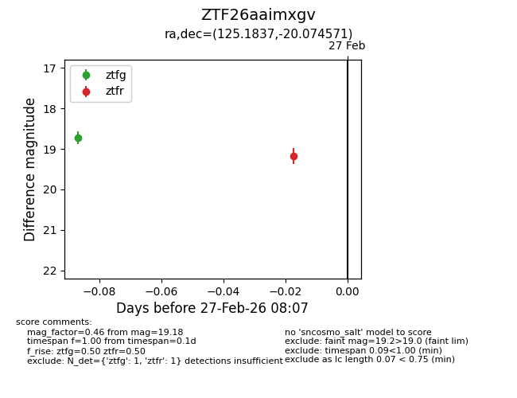
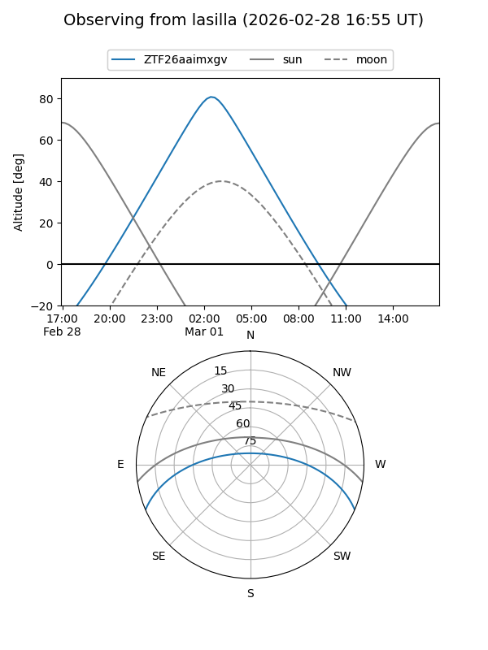
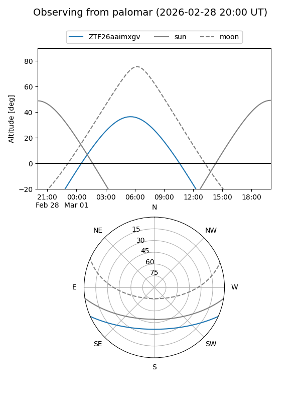
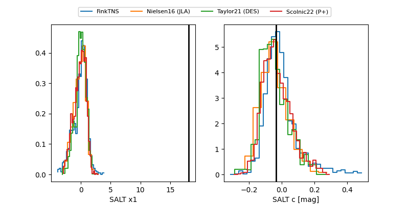

ZTF26aaimxgv
Target ZTF26aaimxgv at 2026-02-27 08:08
Aliases and brokers:
FINK: link
Lasair: link
ALeRCE: link
alt names
ZTF26aaimxgv (ztf,fink_ztf)
Coordinates:
equatorial (ra, dec) = 125.1837,-20.07457
equatorial (HMS+DMS) = 08:20:44.09,-20:04:28.45
galactic (l, b) = (241.2491,+9.26542)
Flags:
Photometry:
last ztfg=18.72, ztfr=19.18
1 ztfg, 1 ztfr detections
Lightcurve

Visibility


Additional plots
